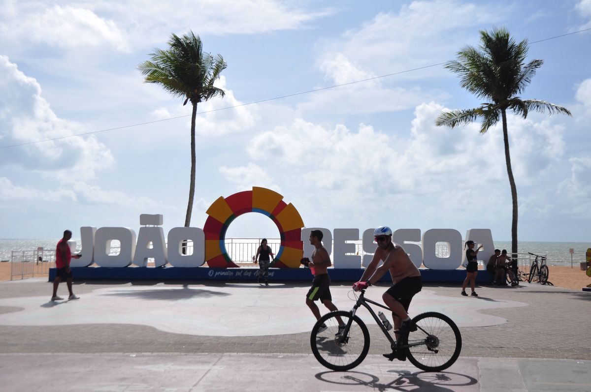
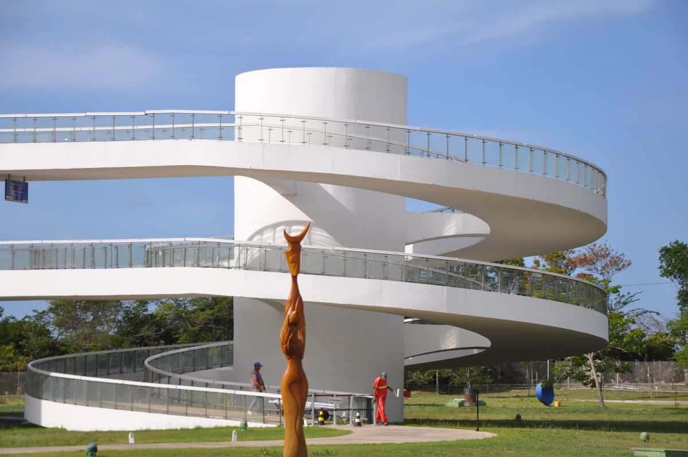

Descubra as belezas da cidade onde o sol nasce primeiro!
Praias
João Pessoa possui praias lindas e tranquilas ideais para relaxar.
Praia de Tambaú
Praia de Cabo Branco
Praia do Bessa
Lugares Turísticos
Alguns dos principais pontos turísticos da cidade:
cabo branco

O roteiro pelos pontos turísticos de João Pessoa pode começar pelo Farol do Cabo Branco,
um farol de formato triangular que simboliza o ponto mais oriental das Américas — a Ponta
do Seixas, ou "Porta do Sol", como chamam os paraibanos. Não se paga nada para visitar o farol e, de lá, se tem uma vista bonita para o mar — que poderia ser melhor valorizada, aliás, já que o espaço se encontra razoavelmente abandonado, precisando de mais atenção.
centro historico

Reserve pelo menos meio turno para explorar o Centro de João Pessoa e admirar o lado antigo da cidade,
visto em obras como o Centro Cultural São Francisco, o Hotel Globo, a Casa da Pólvora, e em diversas igrejas históricas e o belo conjunto de casarões da Praça Antenor Navarro. Ainda na região central da cidade, encontram-se o Mercado Público, alguns dos principais teatros da capital paraibana e o Parque Solon de Lucena.